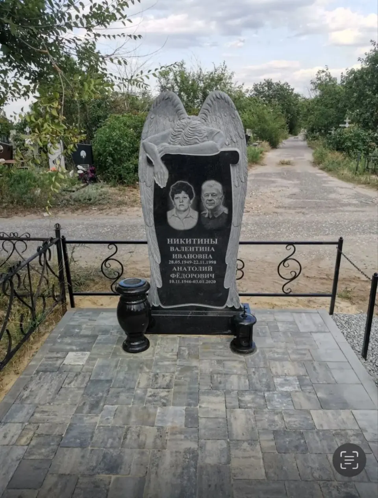
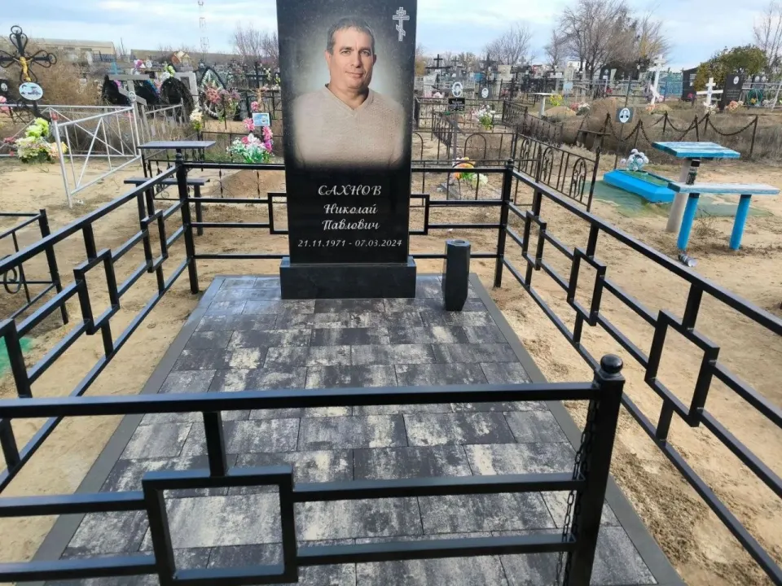
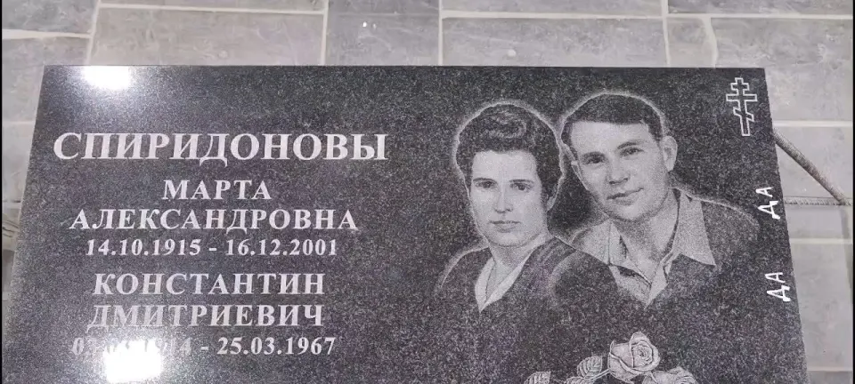
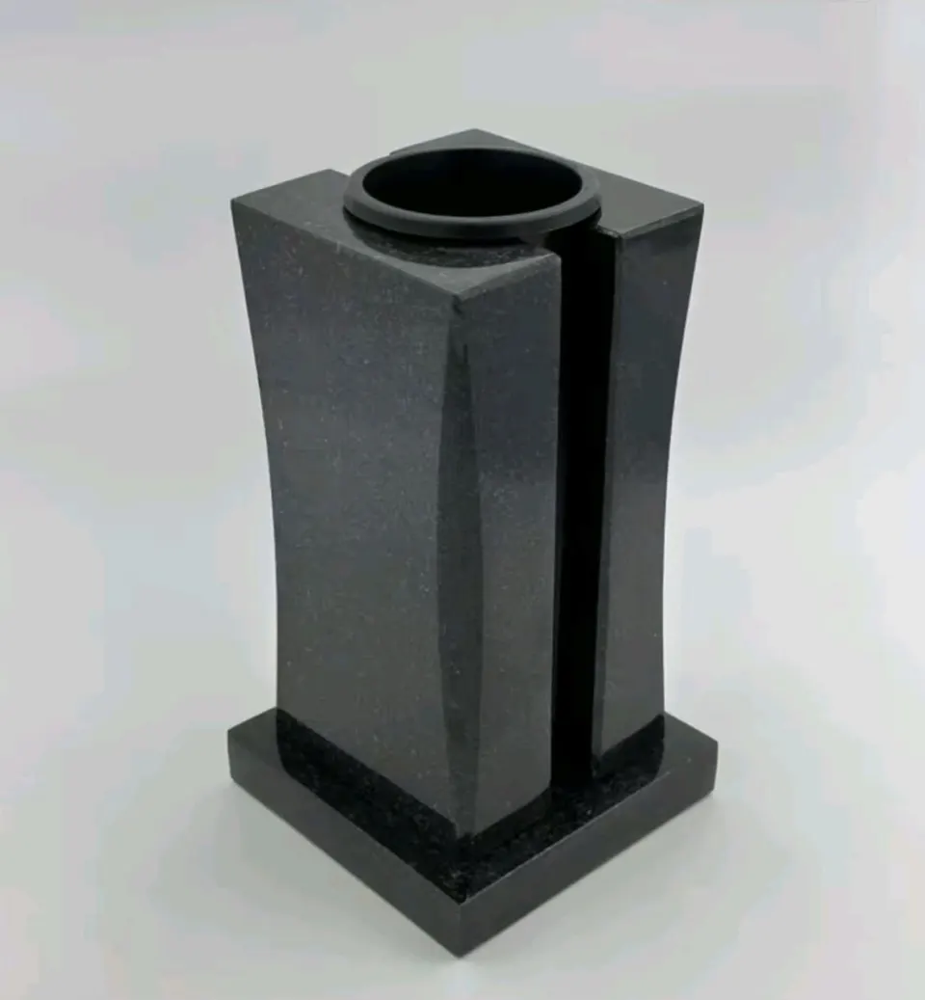

Памятники из камня
Гранит и мрамор, лаконичные формы и сложные индивидуальные проекты. Изготовим памятник по вашему замыслу.
Изготовление памятников в Волгограде
Напишите, какой вариант нужен, или отправьте фотографию понравившегося памятника. Подскажем стоимость изготовления, оформления и установки.
Цена договорная · Возможна рассрочка

на разработку дизайн-проекта
на изготовление памятника
доставка, установка и благоустройство
Своя мастерская. Своё производство.
У нас собственное производство в Красноармейском районе Волгограда. А знакомство с будущим памятником начинается в мастерской на Ангарской, 104.
Камень есть в наличии, готовые памятники представлены на витрине. Приходите посмотреть образцы, полистать каталоги и спокойно обсудить детали с мастером.
Приехать в мастерскую на Ангарской, 104Что мы делаем
Возьмём на себя каждый этап. Поможем выбрать материал, форму и оформление с учётом ваших пожеланий.
Гранит и мрамор, лаконичные формы и сложные индивидуальные проекты. Изготовим памятник по вашему замыслу.
Точное оформление по фотографии: портреты, надписи и памятные детали, которые делают работу личной.
Доставим и установим памятник. Выполним облицовку и обустройство места захоронения.
У нас можно заказать разовую уборку участка. Объём работ и стоимость обсудим при обращении.
Работы мастерской
Примеры памятников и благоустройства. Нажмите на фотографию, чтобы рассмотреть работу подробнее.
Художественное оформление · Благоустройство
Гранит · Комплексное оформление

Художественное оформление · Облицовка
Гранит · Декоративное благоустройство
Портреты · Плитка и ограда
Индивидуальный проект · Установка под ключ

Бережно к деталям
Фотография, знакомый взгляд, важные слова. Выполним точное художественное оформление по фото и поможем подобрать надпись.
Обсудим детали на этапе дизайн-проекта, чтобы готовый памятник стал достойной памятью о близком человеке.
Завершающие детали
В наличии и на заказ — ограды, столы и лавки, кресты, искусственные цветы и венки, лампады. Поможем подобрать принадлежности к оформлению участка.

Слова наших заказчиков
О работе мастерской — от тех, для кого мы создавали памятники.
«Надежда, здравствуйте. Я хочу Вас ещё раз поблагодарить за портрет мамы. Когда принимали работу, памятник стоял на боку, и мы по достоинству не смогли оценить Вашу работу. Установили памятник, мама такая красивая, с искринкой в глазах… Спасибо за Ваше умение и старание, успеха и всего доброго».
«Большой ассортимент продукции. Удобное месторасположение. Качественное исполнение».
От обращения до установки
Позвоните или напишите. Выслушаем ваши пожелания и бесплатно проконсультируем.
За два дня разработаем дизайн-проект. Вместе определим материал, форму и оформление.
Выполним работу по согласованному проекту. Срок изготовления — до двух месяцев.
Доставим памятник, установим и выполним согласованное благоустройство участка.
Индивидуальный расчёт
Цена договорная. Возможна рассрочка.
Стоимость зависит от материала, размеров, художественного оформления и объёма работ. Обсудим ваш запрос и рассчитаем цену.
Оплата по QR-коду, картой, наличными или банковским переводом. Наличный и безналичный расчёт. Доставка и самовывоз.
Мы рядом, чтобы помочь
Напишите, какой вариант нужен, или отправьте фотографию понравившегося памятника. Подскажем стоимость изготовления, оформления и установки.
09:00–18:00